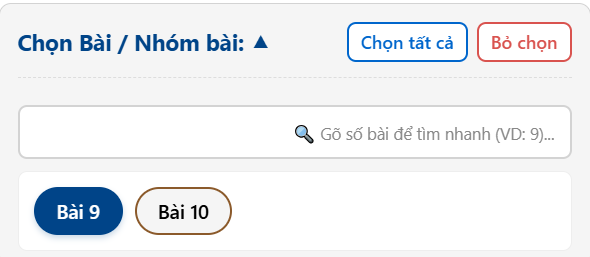
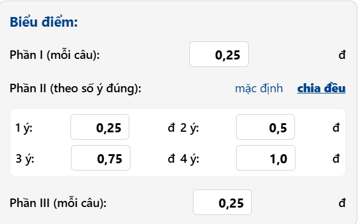
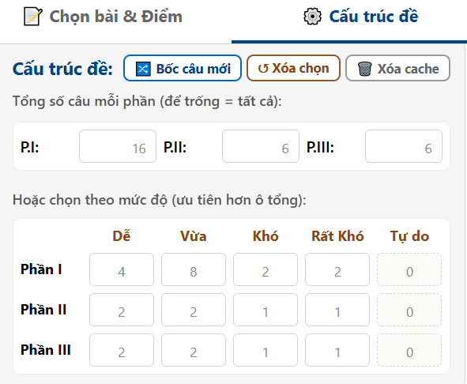
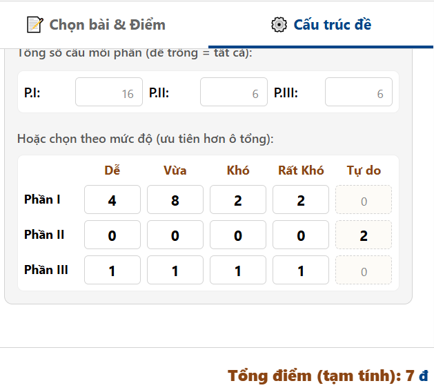
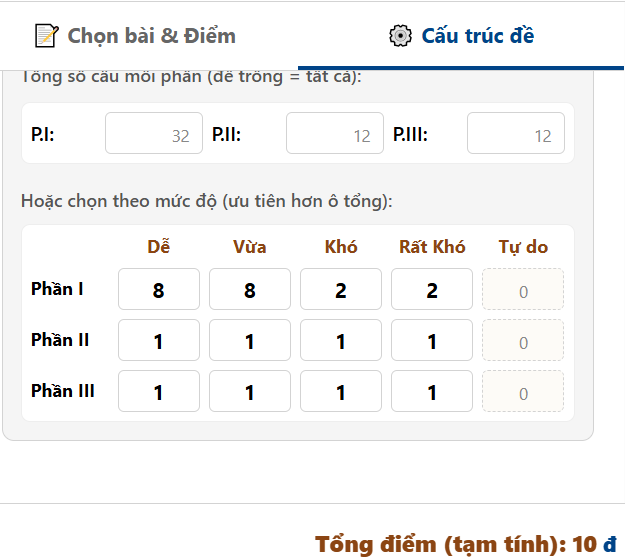

Hệ thống Luyện tập Trắc nghiệm
Khi mới vào trang, bạn sẽ thấy màn hình chào mừng. Để bắt đầu, hãy bấm vào nút ⚙️ Chọn ở góc trên bên phải màn hình.


Sau khi cấu hình xong, bấm nút 🚀 Tạo Trắc Nghiệm màu xanh để hệ thống sinh đề.
Chuyển sang tab Cấu trúc đề, bạn sẽ thấy giao diện chia ô để chọn số lượng câu hỏi. Dưới đây là các cách cài đặt phổ biến:



Hệ thống có 2 nút chức năng dễ gây nhầm lẫn. Bạn hãy xem kỹ sự khác biệt dưới đây:
Vị trí: Nằm trên thanh công cụ, hiện ra sau khi bạn đã nộp bài.
Tác dụng: Giữ nguyên bộ câu hỏi cũ, nhưng xáo trộn lại thứ tự câu hỏi và thứ tự đáp án A, B, C, D.
Mục đích: Làm lại chính đề đó để nhớ bài lâu hơn, tránh học vẹt vị trí đáp án.
Vị trí: Nằm trong bảng Cài đặt (⚙️ Chọn) hoặc nút Bốc câu mới.
Tác dụng: Bốc các câu hỏi khác trong ngân hàng đề. Tạo ra một đề hoàn toàn mới.
Mục đích: Đổi gió, làm một đề khác có cùng cấu trúc mức độ (Dễ, Vừa, Khó).
| Phần thi | Cách trả lời |
|---|---|
| Phần I Trắc nghiệm A, B, C, D |
Bấm chọn vào ô đáp án bạn cho là đúng nhất. |
| Phần II Đúng / Sai |
Với mỗi ý a, b, c, d, bấm chọn nút Đ (Đúng) hoặc S (Sai). |
| Phần III Trả lời ngắn |
Gõ kết quả vào ô trống. Chỉ nhập số (tối đa 4 ký tự). Đối với số thập phân: Học sinh có thể dùng dấu phẩy (VD: 2,5) hoặc dấu chấm (VD: 2.5) - Hệ thống đều hiểu và chấm điểm chính xác như nhau. |